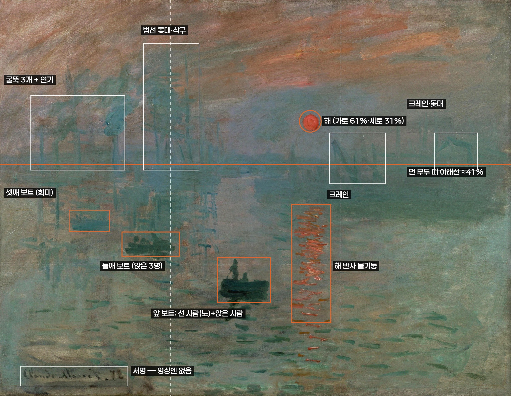
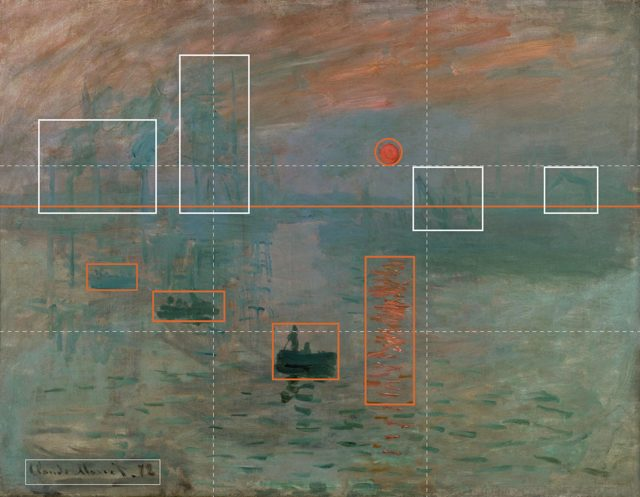
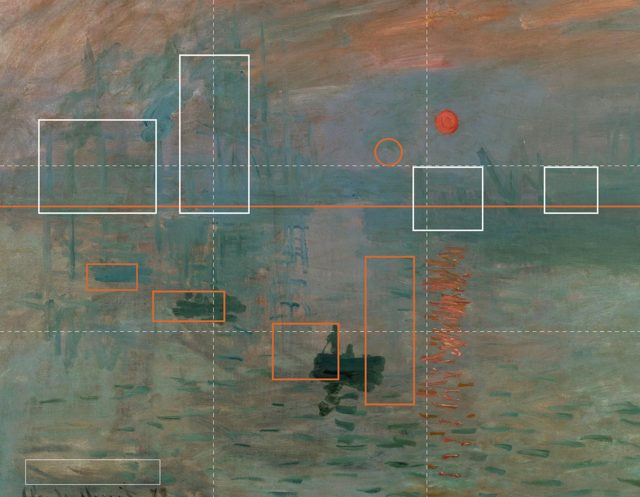
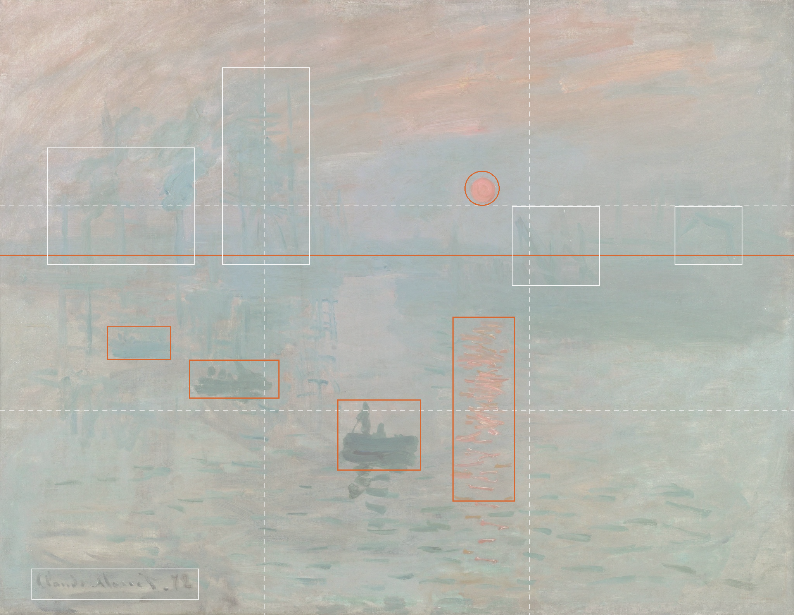
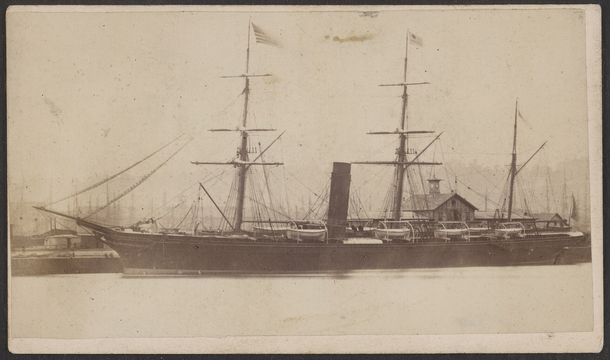
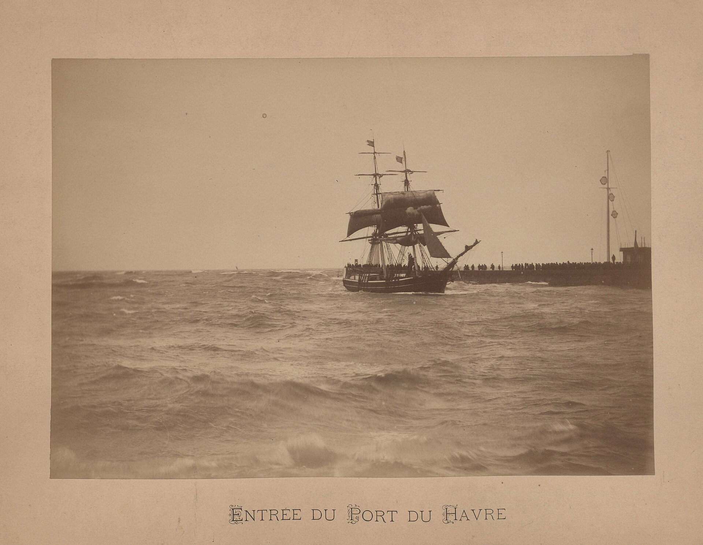
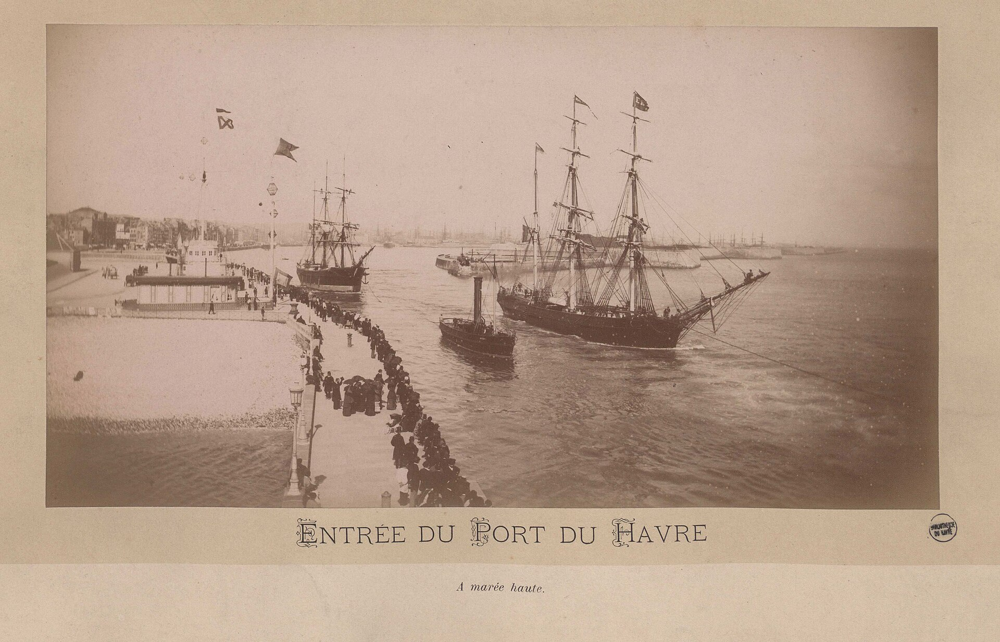
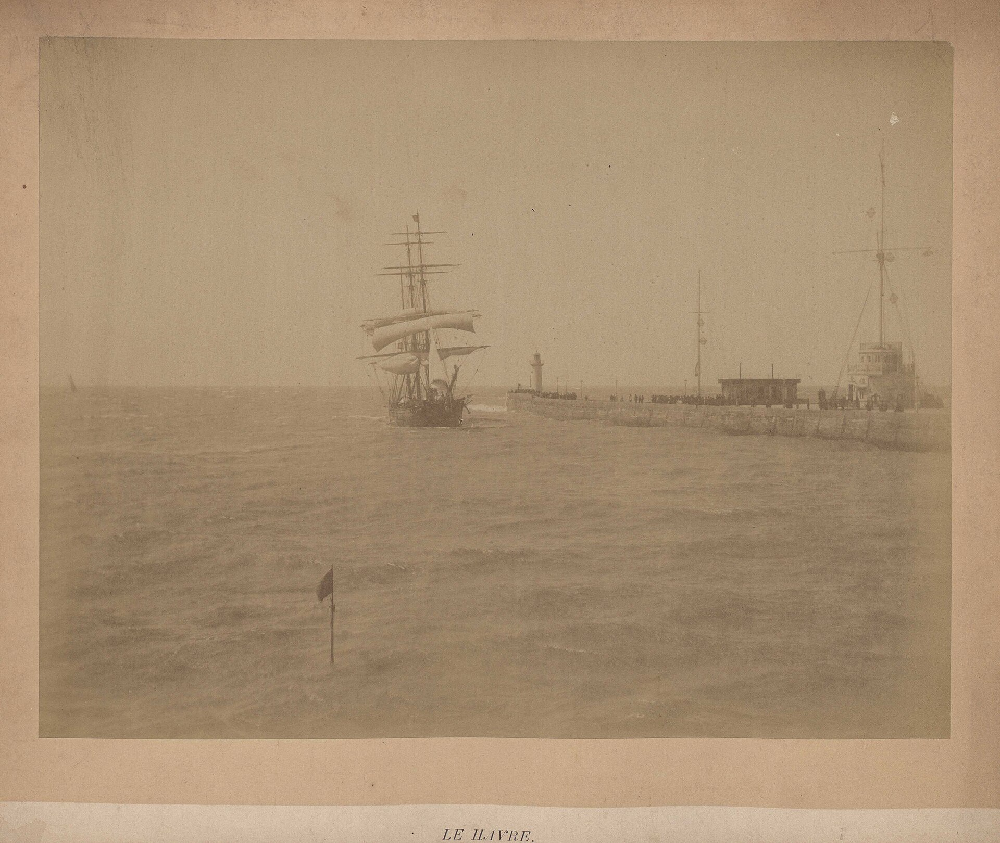
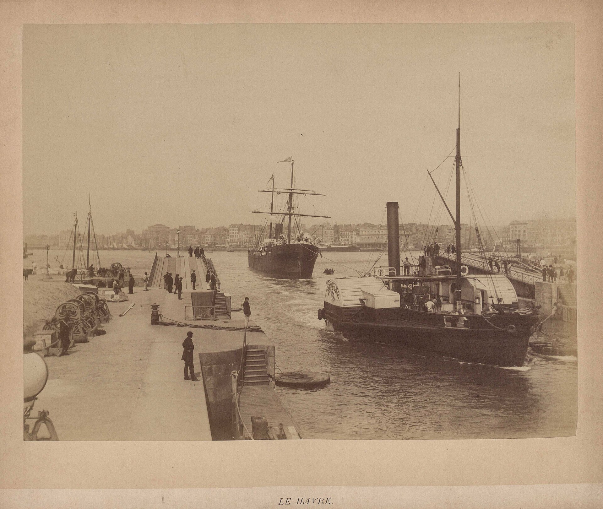
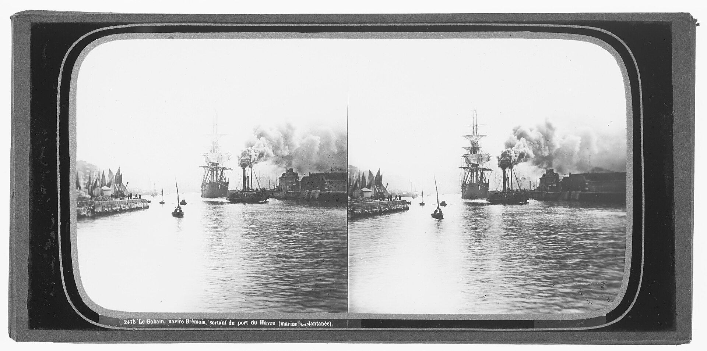

제작 브리프 · 문명탐험가 · AI 영상
모네가 본 장면 — 〈인상, 해돋이〉
그림 속 1872년 르아브르 항구의 새벽을 실제 풍경처럼 10초 영상으로 만듭니다.
그림과 영상을 겹쳐서 전환하므로 구도가 그림과 똑같아야 합니다. 앱에는 AI로 재현한 장면 라벨이 붙습니다.
빠른 순서
- 그림 이미지를 내려받기 그림 내려받기
- Runway(또는 Higgsfield)를 열고 이미지 생성 메뉴로 — 메뉴 이름은 아래 탭 참고
- 내려받은 그림을 참고 이미지(Reference)로 올리기
- 정지 장면 프롬프트를 복사해 붙여넣기
- 설정: 비율 4:3, 해상도 가장 높게, 4장 이상 생성
- 생성 → 구도가 가장 잘 맞는 1장 고르기 (겹쳐보기로 확인) → PNG로 저장
- 그 이미지를 영상(Image to Video) 메뉴의 첫 프레임으로 넣기 (끝 프레임 칸이 있으면 같은 이미지)
- 영상 프롬프트를 복사해 붙여넣기
- 설정: 10초(없으면 5초 2개), 카메라 고정(Static), 움직임 세기 낮게
- 생성 → 내려받아 이름을 sunrise-scene.mp4 / sunrise-still.png로 바꿔 담당자에게 전달

도구별 메뉴와 설정
버전에 따라 메뉴 이름이 다를 수 있습니다. 비슷한 이름을 고르면 됩니다.
1 · 정지 장면
- 홈 →
Image(또는Generate Image with References, Gen-4 Image 계열) References에 그림 올리기 (태그 이름을 물으면monet)- 정지 장면 프롬프트 붙여넣기 — Runway는 네거티브 칸이 없으니 프롬프트만
Aspect ratio4:3 ·Resolution최대(1080p 등) · 4장
2 · 영상
- 골라둔 정지 장면 →
Image to Video(또는Video→ 최신 모델, 예: Gen-4.5) - 이미지를
First frame으로. 끝 프레임이 되는 모드(Keyframes/Animate Frames등)가 있으면Last frame에도 같은 이미지 - 영상 프롬프트 붙여넣기 ·
Duration10s · 카메라 컨트롤이 보이면 전부 0 / Static - 결과가 좋으면
Upscale(4K 또는 최대) 후 내려받기
1 · 정지 장면
- 상단
Image→ 참고 이미지를 받는 모델 선택 (예: Nano Banana 계열, Seedream 계열) - 그림을 참고 이미지로 올리고 정지 장면 프롬프트 붙여넣기
Negative칸이 있으면 정지 장면 네거티브 모두 복사해서 붙여넣기- 비율 4:3 · 품질 최고 · 4장
2 · 영상
- 상단
Video(또는Create Video) →Start frame(끝 프레임 되는 모델이면End frame에도 같은 이미지. 예: Kling·Veo 계열) - 카메라 프리셋:
Static/No camera movement/Still중 있는 것. 줌·팬 프리셋 금지 - 영상 프롬프트 + (칸 있으면) 영상 네거티브 붙여넣기 · 10초 · 최고 해상도
프롬프트 (그대로 복사)
Photorealistic reconstruction of the exact scene in the reference painting (Claude Monet, Impression, Sunrise): the outer harbour of Le Havre, France, at dawn on a misty November morning in 1872, seen from an upper-floor window of a waterfront hotel, looking down across calm harbour water. Keep the composition identical to the reference image: same framing, same horizon height, same position and size of every element; do not crop, zoom or reframe. A small, low, orange-red sun sits just right of centre in the upper third, a soft disc seen through haze, casting a narrow vertical column of broken orange reflections on the water directly below it. Just left of centre in the foreground, a small wooden rowboat with one man standing and rowing with a long oar and one seated figure, dark silhouettes against the mist. Behind it to the left, a second dark rowboat with three seated figures, and further left a faint third boat almost lost in the fog. In the background on the left, three tall factory and steamer chimneys with grey-blue smoke rising and drifting, and the tall masts and rigging of moored wooden sailing ships. On the right, the angular silhouettes of wooden harbour cranes and more masts above a low line of quays and ship hulls, all softened by thick blue-grey fog. Sky with salmon-pink and orange streaks of early light above the haze. Palette: cool blue-grey and teal mist, muted orange sun and reflection. Period-correct 1872 details only: timber and stone quays, wooden sailing ships with masts, early paddle and screw steamers with one tall thin funnel, unlit gas lamps. Natural photographic look, as if a colour photograph could have been taken in 1872: soft focus in the distance, gentle film grain, realistic atmospheric perspective, real water and real light, no painterly brushstrokes.
modern ships, container ships, shipping containers, concrete quays, steel gantry cranes, cars, trucks, electric lights, street lights, power lines, wind turbines, airplanes, modern buildings, high-rise buildings, outboard motors, life jackets, brushstrokes, painting texture, canvas texture, oil paint, illustration, cartoon, CGI look, oversaturated colours, HDR, lens flare, sun too large, two suns, extra boats in the foreground, text, watermark, signature, logo, frame, border
Locked-off static camera on a tripod: no camera movement, no zoom, no pan, no tilt. The frame stays exactly as composed for the whole shot. The low orange sun rises very slightly and glows a little brighter; its column of reflections on the water shimmers gently. Thin mist drifts slowly from left to right across the harbour. In the foreground the small rowboat glides slowly forward as the standing man makes slow, steady oar strokes; the other two boats stay almost still, rocking slightly on the water. Grey smoke from the chimneys curls upward and drifts slowly. Calm water with soft ripples. Natural real-time speed, realistic and photographic. Every ship, mast, crane and figure keeps its exact shape and size from start to end.
camera movement, zoom, pan, tilt, dolly, handheld shake, morphing, warping, melting shapes, objects changing shape, new boats appearing, boats disappearing, people walking on water, extra people, sudden lighting changes, flicker, time-lapse, fast motion, birds flying across the frame, modern ships, text, subtitles, watermark
내려받기



잘 됐는지 확인
- 겹쳐봤을 때 해 · 물기둥 · 앞 보트가 그림과 같은 자리에 있나?
- 현대 물건(컨테이너·철제 크레인·콘크리트·전등·차)이 하나도 없나?
- 영상에서 화면 테두리가 고정돼 있고, 배·사람 형태가 녹거나 깜빡이지 않나?
- 색이 자연스러운가? (푸른 회색 안개 + 작고 낮은 주황 해, 과한 채도 없음)
넷 다 "예"면 통과. 하나라도 "아니오"면 아래 문제가 생기면.


겹쳐보기 (이 페이지에서 바로)
생성한 이미지를 고르면 그 위에 그림이 겹쳐집니다. 파일은 어디에도 올라가지 않고 이 브라우저에서만 보입니다.

문제가 생기면
구도가 안 맞을 때
정지 장면 프롬프트 맨 앞에 붙여넣고 다시 생성. 참고 이미지는 그림 1장만, 참고 강도(Strength)가 있으면 최대로.
Match the reference image framing exactly. The sun is 61% from the left and 31% from the top. The foreground rowboat is 47% from the left and 70% from the top. The far quays end at 41% from the top. Do not crop, zoom, widen or reframe.
현대 배·건물이 나올 때
프롬프트 끝에 추가 (Runway는 "없애라"보다 "이것만 있다"가 잘 먹힙니다).
Every vessel is a 19th-century wooden sailing ship with masts and rigging or a small early steamer with one tall thin black funnel. Quays are timber and stone. The only lights are the sun and its reflection.
영상에서 카메라가 움직일 때
영상 프롬프트 맨 앞에 추가 + 카메라 프리셋을 Static으로, 움직임 세기(Motion)를 낮게.
The camera is completely fixed, like a long exposure on a tripod. The edges of the frame never move. Only the water, the mist, the smoke and the small rowboat move.
형태가 녹아내리거나 깜빡일 때
영상 프롬프트 끝에 추가 + 움직임 세기 낮게. 그래도 안 되면 5초 2개로 나눠 생성(두 번째는 첫 영상의 마지막 프레임에서 시작).
Subtle, minimal motion only. All ships, masts, cranes, chimneys and people keep exactly the same shape, size and position for the whole clip; only the ripples, the mist and the smoke change. No flicker.
4:3 비율이 없을 때
가장 가까운 비율(3:2 등)을 고르고, 그림이 가운데 오게 생성. 앱에서 그림 비율(약 4:3)로 가운데를 잘라 씁니다. 겹쳐보기도 같은 방식(높이 맞춤·가운데)으로 보여줍니다.
납품 사양
| 영상 | MP4 (H.264) · 가로 1920px 이상(안 되면 도구 최대) · 24–30fps · 10초 · 소리 없음 |
|---|---|
| 정지 장면 | 영상 첫 프레임으로 쓴 이미지 PNG |
| 파일 이름 | sunrise-still.png · sunrise-scene.mp4 (여러 개면 sunrise-scene-v2.mp4 …) |
| 변형 | 3–5개 환영 |
| 보낼 곳 | 담당자에게 전달 |
더보기
원본 그림 정보와 그날의 추정
| 작품 | 클로드 모네, 〈인상, 해돋이〉(Impression, soleil levant), 1872, 캔버스에 유채 |
|---|---|
| 크기 · 소장 | 48 × 63 cm · 파리 마르모탕 모네 미술관 (inv. 4014) |
| 이미지 | 퍼블릭 도메인 · Wikimedia Commons |
| 그린 날 (추정) | 1872년 11월 13일 오전 7시 35분경(현지 평균시), 르아브르. 모네가 묵던 항구 앞 오텔 드 라미로테(Hôtel de l'Amirauté) 방 창에서 내려다본 장면. 천문학자 도널드 올슨(Texas State Univ.) 팀이 해의 위치, 조수(큰 배는 만조에만 입항), 기상 기록, 연기 방향으로 계산해 2014년 마르모탕 전시 도록에 실은 추정입니다. 다른 후보일은 1873년 1월 25일. 출처: Texas State University 보도자료(2014.9) · Space.com(2014.9) · 도록 〈Impression, soleil levant: l'histoire vraie du chef-d'œuvre de Claude Monet〉(Hazan, 2014) |

구도 가이드 읽는 법
| 해 | 가로 61% · 세로 31%. 작고 낮은 주황 원. 바로 아래 물 위로 끊어진 주황 반사 기둥(세로 52–82%) |
|---|---|
| 앞 보트 | 가로 43–53% · 세로 65–77%. 선 사람 1명(긴 노) + 앉은 사람 1명 |
| 둘째 · 셋째 보트 | 왼쪽 뒤로 어두운 보트(앉은 3명), 더 왼쪽에 안개 속 희미한 보트 |
| 왼쪽 배경 | 굴뚝 3개와 피어오르는 연기, 범선 돛대·삭구 |
| 오른쪽 배경 | 기울어진 크레인 실루엣, 돛대, 낮게 깔린 부두·선체 띠(아래선 세로 약 41%) |
| 빼기 | 왼쪽 아래 모네 서명은 영상에 넣지 않음 |
시대 고증 참고자료 (1860–1880년대 르아브르 항)
1872년에 맞는 것: 외륜·스크루 증기선(가늘고 높은 굴뚝 하나), 돛대 많은 목조 범선, 나무·돌 부두, 가스등(새벽이라 꺼져 있음), 노 젓는 작은 나룻배. 없어야 할 것: 철제 현대선, 컨테이너, 콘크리트, 철골 갠트리 크레인, 자동차, 전등.

_-_Auguste_Lacroix,_photographe,_Havre_LCCN2015645486.jpg){kind=link}










BnF 자료의 "1880년경"은 소장처 기재 연도입니다. 1872년과 몇 해 차이가 있지만 항구 설비·선박 형태 참고로 충분합니다.
전체 체크리스트
- 겹쳐보기 PNG와 구도가 맞음 (해·물기둥·세 척의 보트·수평선)
- 시대에 맞음: 목조 범선, 굴뚝 하나짜리 증기선, 나무·돌 부두, 연기 / 현대 물건 없음
- 영상: 카메라 고정, 형태 왜곡·녹아내림·깜빡임 없음, 새 배·사람이 생기거나 사라지지 않음
- 색이 자연스러움: 푸른 회색 안개, 작고 낮은 주황 해, 과포화·HDR 느낌 없음
- 글자·워터마크·서명 없음
- 앱에서 AI로 재현한 장면 라벨과 함께 사용 (사실 기록 사진처럼 쓰지 않음)
이미지: Claude Monet, 〈인상, 해돋이〉(1872, 퍼블릭 도메인) 및 위 출처의 퍼블릭 도메인 사진. 구도 표시선은 이 브리프용으로 추가.